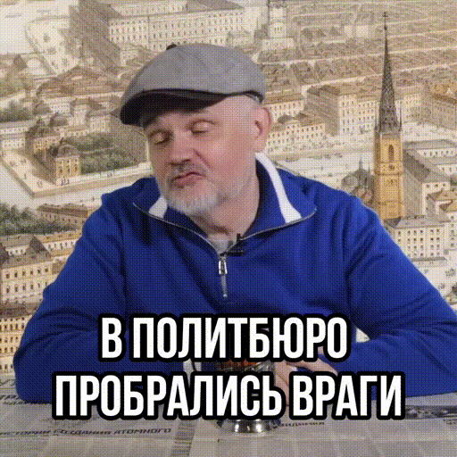
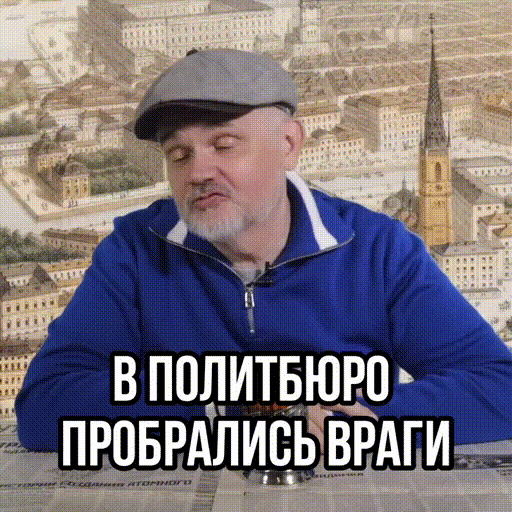

Лучшие цитаты:
"Христианство это миф касты могильщиков большого и культурного государства, превратившийся в монорелигию в результате государственного переворота."
-- Дмитрий Евгеньевич Галковский


"Христианство это миф касты могильщиков большого и культурного государства, превратившийся в монорелигию в результате государственного переворота."
-- Дмитрий Евгеньевич Галковский